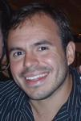

Curriculum Vitae

Hector Parra
hector@hectorparra.com
(949) 829-1009
2012-06-22: I'm a California resident living temporarily in Ecuador, and I'm searching for contract or telecommuting work in web design and development. However, I am open to opportunity anywhere in the world. I do not need a work visa in the United States of America, Ecuador, or Venezuela, as I am a citizen of all three countries.
Hector Guillermo Parra Alvarez
- english
- spanish
- indonesian
I was born in California and have also lived in Venezuela on two different occasions, in Chile, in Indonesia, and in Ecuador. I have lived among people of varied cultures, religions, and socioeconomic backgrounds. I bring a unique perspective.
I believe the web is the new platform.
I'm particularly interested in applications regarding healthcare and education. Creative application of computer science in these areas will guide humanity towards a better future.
VisitPuertoLopez.com
- html5
- css3
- jekyll
- twitter bootstrap
- illustrator
- photoshop

Summer 2012
While staying in the coastal town of Puerto Lopez, Ecuador I am designing and coding VisitPuertoLopez.com to provide tourism information about the surrounding area. Tools used include Adobe Photoshop & Illustrator, Jekyll, and Twitter Bootstrap. I wrote about the creation process and the simple agile techniques used to guide me.
Ruby SerialPort
- ruby
- gem
- rs-232
- open-source
September 2009 - Today
I maintain and release the serialport gem. I became the maintainer by accident and wrote about the experience, which was a testament to the power of distributed version control and social coding. Of course, the Ruby SerialPort source is on GitHub. I answer support questions there from time to time.
Calit2
- telemedicine
- eHealth
- web 2.0
April 2008 - April 2011
The California Institute for Telecommunications and Information Technology (Calit2) is a multidisciplinary research institute between UC Irvine & UC San Diego. I worked at the Irvine division at the eHealth Center under Biomedical Engineering Professor Mark Bachman and Calit2 Irvine Director Professor G.P. Li.
At Calit2 I worked on Telios, Share Our Selves PNG, and the Specialty Care Safety Net Initiative.
Telios
- telemedicine
- sensors
- jquery
- html
- css
- h2o
- ramune
- martinelli
- xbee
April 2008 - April 2011
The Tele-immersive Operating System, or Telios, is a Web 2.0 telemedicine development platform. It was also a blanket term for the technologies that powered it. The purpose of Telios was to lower the barrier of entry by utilizing open-source software to enable technology that a patient may already have. The television and its remote control was the medium of choice, and interface design was targeted towards the elderly. The best description of the Telios vision can be read at the beginning of my Statement of Purpose [PDF] for graduate school admission. The following poster presented at Medicine Meet Virtual Reality 18 (MMVR) summarizes Telios, as does the written MMVR submission [PDF].
Telios was composed of the following packages I developed:
- Martinelli: HTTP-enabled Device Server
- H2O: Vector-Like Web Interface Framework
- Ramune: Media Communications Framework
All widget applications and the Telios UI itself were built with some combination of these components. They were also used in the Share Our Selves PNG.
Undergraduate team member Allen Luo developed graphics for several widgets and assited in implementations. He also designed and implemented the Telios website. In the summer of 2008, I supervised SURF-IT Fellow Jakkree Janchoi. He implemented H2O.Chart which was based on HTML Canvas.
It seems as of February 2012, they are still demonstrating Telios.
Articles Regarding or Mentioning Telios
- "How to Make a Region Innovative." strategy-business. February 28, 2012.
- "Telemedicine puts experts on call." UC Health. June 27, 2011
- "eHealth Evolution." Calit2. May 17, 2011.
- "House call 2.0: Telemedicine brings doctors into home." OCLNN. March 22, 2010. Also see PDF version or reprint in the Daily Pilot.
- "Meeting of the Minds Promotes Teamwork." Calit2. April 23, 2009
- "Telepresence System Renamed." Calit2. April 21, 2009.
- "New Partnership Increases Access to Healthcare." Calit2. December 15, 2008.
Specialty Care Safety Net Initiative
- telemedicine
- medical informatics
- polycom
- tandberg
- irb
- emr
- hipaa
February 2010 - April 2011
The Specialty Care Safety Net Initiative (SCSNI) was a 2 year telehealth project funded by the California HealthCare Foundation. It used modern telemedicine equipment to connect 38 Safety Net clinics with the five UC medical schools to provide specialty care to underserved communities. Monies were used to pay specialists, to secure equipment, and to train referring clinics. The data was used to understand how such programs could be financially viable.
I was brought onto SCSNI through Calit2 as technical support for the UC Irvine Medical Center, ensuring that the network and connected Polycom equipment was in working order. I trained specialists and even a group of medical students on the equipment and taught introductions to telehealth technology. I coordinated informatics with research data collection and wrote the associated IRB.
Through this initiative I learned about electronic medical records, patient workflows, grants & funding, insurance companies, safety net clinics & FQHCs, Medi-Cal & Medicare, the University of California, federal and state healthcare laws like HIPAA and HITECH, and the American healthcare system as a whole. It was a learning experience that deeply altered my personal thoughts on technology, education, healthcare, and government.
Articles regarding SCSNI or CTN
- "Schwarzenegger launches nation's largest 'telehealth' system." LA Times. August 18, 2010.
- "UC Irvine joins statewide 'telemedicine' network." Orange County Register. August 17, 2010.
H2O
- javascript
- dom
- css
July 2009 - May 2010
H2O was a vector-like widget framework. It's aim was to allow designers to produce responsive, full-screen UIs using only HTML. It was implemented in JavaScript and CSS. It was quite experimental, as it pushed the limits of the then-current HTML and CSS specification. The H2O source is on GitHub.
H2O was used in Telios widgets, including the Frescolita widget launcher and home menu.
Martinelli
- ruby
- mongrel
- rest
- serialport
- threads
- i/o
March 2009 - May 2010
Martinelli is a web-enabled device server capable of sending and receiving RS-232 commands via HTTP. The HTTP interface attempts to follow proper REST design wherever possible. It was written in Ruby using the JSON, Mongrel, and SerialPort gems. The Martinelli source is on GitHub.
Martinelli was used in Telios widgets and the Share Our Selves PNG.
Ramune
- flash video
- flex
- as3
- stratus
- fms
April 2008 - April 2011
Ramune was an Adobe Flash based framework to enable web video and audio, including conferencing and still image capture. It also provided sockets for device communication. It was written in ActionScript 3 and JavaScript. It grew from the sample code Adobe released to demonstrate Stratus.
Ramune was used in the Telios videoconferencing widget and the Share Our Selves PNG.
Opticon
- health informatics
- chi 2011
- ubicomp 2010
- asp.net
- c#
Summer 2010
Opticon was an academic research experiment which used constant comparative analysis on patient interviews to formulate design requirements for a user-centered personal health management messaging system. Basically, we designed and implemented an web-application (Opticon) based on the needs communicated by chronic diabetics. Opticon required that the patient input their blood glucose level twice a day, morning & evening. If the data wasn't received then a risk message was sent to their mobile phone via MMS. Jim Milewski had already done the interviews and analysis as part of other research, and I joined him for the design, implementation, and associated experiment.
The web application was written in ASP.NET. Messages were created using the email-to-MMS bridge US mobile carriers provide. Charts were created using Google Chart Tools.
Publications on Opticon2
James Milewski and Hector Parra. 2011. Gathering requirements for a personal health management system. In Proceedings of the 2011 annual conference extended abstracts on Human factors in computing systems (CHI EA '11). ACM, New York, NY, USA, 2377-2382. DOI=10.1145/1979742.1979881 http://doi.acm.org/10.1145/1979742.1979881
Jim Milewski and Hector Parra. 2010. Gathering requirements for a personal health management system. In Proceedings of the 12th ACM international conference adjunct papers on Ubiquitous computing - Adjunct (Ubicomp '10 Adjunct). ACM, New York, NY, USA, 415-416. DOI=10.1145/1864431.1864464 http://doi.acm.org/10.1145/1864431.1864464
1. Unfortunately, this was not the poster that was presented, because it didn't conform to what was expected.
2. These are similar but different publications. They are named the same due to human error.
University of California, Irvine
- java
- c#
- xna
- c
- ruby
- rails
Bachelor of Science, Computer Science, March 2008
I did a few interesting things at UC Irvine. I was an inaugural Ambassador of Information & Computer Sciences. They even wrote a spotlight on me. Mentioned is the Video Game Development course, where I and four other students created a side-scrolling fighter named Legend of Fiasco, written in C# using Microsoft XNA. Unfortunately we all seem to have lost the source code. That was the first and last time I use Subversion for one of my own projects.
My final quarter I implemented a web-based prototype of visual activity schedules for children with autism spectrum disorder using Ruby on Rails and Prototype.
Prior to graduation I was awarded for an Outstanding Contribution by an Undergraduate.
Saddleback College
- c++
- c
- java
- x86 assembly
Associate of Science, Computer Science, May 2005
Unlike the trend affecting many colleges and universities at the time (and today), the introductory and data structures curriculum at Saddleback was C++ based, and so I learned fundamentals in memory management and pointer arithmetic, template programming, and the STL.
I started the Saddleback Computer Science Society in an effort to encourage Linux and open-source awareness. I organized trips to SCALE and the Desktop Linux Summit.
I worked a few hours a week as a CS Lab Assistant, supervising the lab and assisting other CS students in C++/STL and Java/AWT/Swing programming assignments.
Prior to graduation I was awarded a Transfer Student Scholarship and the Computer Science Department Scholarship.
Hexahex LLC
- C++
- wxWidgets
- STL
- VB
- html
- css
2004 - 2007
Hexahex LLC was a company I created to cover all the independent work I did while in college, particularly since I was dealing with contracts and operations & involving significant amounts of money. The majority of my work consisted of creating and hosting a few small websites for clients and provided IT support for a couple of small businesses.
A futures trader requested a piece of software to analyze over 50 years of futures data according to his algorithms. The resulting application, "70% Futures", was written in C++ utilizing the STL and wxWidgets for the UI.
A lender requested a loan application spreadsheet, which I created using Excel and Visual Basic for Applications. This may have been my small contribution to the subprime mortgage crisis.
It is expensive to run a Limited Liability Company in California. Running a company full-time was even more costly to my college transcript. I don't recommend it, and now consider it a grave mistake, but the lessons learned will never be forgotten.
HighTower Software
- QA
- contract
August 2004
I was brought in as a quality assurance contractor for a month during a release cycle panic. I didn't know it at the time, but I was actually in a startup environment.
While I didn't do any programming I was familiar with the technologies used to build various components, including Java Swing and LAMP. I was given methods to do black box testing, but I extended these procedures to decision graphs covering all possible iterations of user interaction. It was a tedious but methodical procedure that found various bugs, some which rendered their software platform inoperable.
The bugs I found polarized teams to the point where some wanted me out as soon as possible while other were rallying management to offer me a permanent job. At 22, this was my first experience in office politics! I declined discussions to work there permanently because I wanted to focus on school, as I was ready to transfer the upcoming academic year. Sometimes I wonder if I could have done both, but it had become clear that I stirred up the place.
Colophon
I designed this unorthodox curriculum vitae, or "course of (my) life", because I find the traditional resume structure boring, restricting, and unable to capture what project summaries with pictures and video can. I have heard anecdotally that resumes are rarely viewed or read thoroughly, so I have produced something that is somewhat enjoyable to read and engaging. If you can't appreciate this then I don't want to work for you.
This CV was written in HTML5 using html-mode in Emacs and CSS3 using Web Inspector.